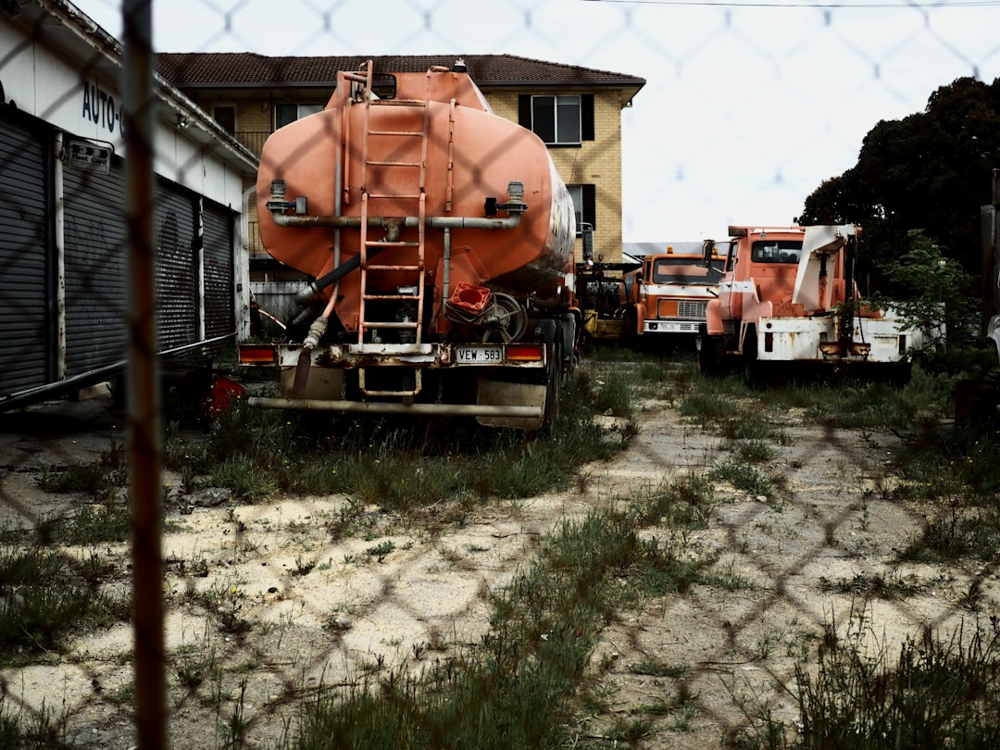

For Adelaide earthworks, start with the intended result, approximate dimensions, access measurements, known ground conditions, buried services and spoil plan. The published guide names 6 work types: site cuts and foundations, trenching and drainage, land clearing and site preparation, soil removal and cartage, driveway and shed pad preparation, and pool or tight access excavation. Small backyard machine time may be 1-2 days when access is straightforward and the soil is not rock.
For homeowners and builders comparing earthmoving services adelaide options, a clearer enquiry starts with levels, access, ground conditions, spoil, photos and the intended finished result.
Earthmoving Services Adelaide Explained
Earthmoving Adelaide presents earthworks as a scope question before a machinery question. That approach suits Adelaide jobs where the same machine category might be asked to prepare a driveway base, trim a shed pad, open a service trench, excavate a pool or shape a house site.
Describe the result first. A building pad needs levels and plan context. A driveway or hardstand needs grading and base assumptions. Drainage work needs the trench route, stormwater shaping and trade boundaries. A pool dig or courtyard job needs access, loading and cartage details before anyone can judge whether compact plant is suitable.
- State the intended finished outcome and approximate dimensions.
- Add photos of the work area, street frontage and access route.
- Note known ground conditions, including sand, reactive clay, fill or rock where known.
- Say whether excavated material stays on site or needs lawful cartage.
- Include plans, engineering, approvals or trade sequencing already known.
Access Checks That Shape The Job
Gate width is only one access measurement. The published guide also calls out turns, overhead clearance, surfaces and the loading route. A machine may fit through an opening but still be slowed by a tight turn, soft ground, low structure, awkward driveway slope or loading area that limits truck movement.
This is relevant for established properties, courtyards and pool excavation, where compact plant may be needed. Smaller machinery can help with tight access excavation, but the scope still needs to say where spoil will be loaded, whether trucks can stand near the work area, and whether extra trips are likely.
Before asking for review, measure the narrowest point on the full route. Include driveway surface, overhead limits, slope, turning points and the likely truck position. Those facts separate a simple dig from a job governed by movement, loading and cartage constraints.
Ground, Levels And Spoil Should Be Separate
Ground conditions and disposal should not be folded into one loose excavation line. The guide names sand, reactive clay, fill and rock as conditions that can change plant, stability, time and disposal assumptions. It also separates excavation, cartage, materials, testing, approvals and downstream trade responsibilities.
That separation helps when comparing local earthmoving services. One written scope may include excavation only. Another may include loading and soil removal. A third may include grading or compacted base preparation for a driveway, shed pad or hardstand. If inclusions are not written down, two prices can look similar while covering different work.
Ask what is excluded as well as included. Common items to clarify are imported fill, compaction testing, retaining walls, stormwater connection, service locating, engineering advice, council approvals, concrete work and landscaping after the machine leaves.
Who This Applies To
This guide is for property owners, builders, renovators and landscape planners preparing an earthmoving enquiry in metropolitan Adelaide, the foothills, Mount Barker or Aldinga Beach. It suits early scoping for a house site, shed pad, driveway, drainage trench, site clearing, pool dig or tight access backyard job.
It is not a substitute for legal approval, engineering design or licence checking. The published guide says approval depends on the property, planning rules and proposed work. Engineering, approvals, contractor selection and the final written quote remain separate decisions.
Where works could affect neighbouring land, retaining walls, stormwater, protected features or building work, check the approval pathway before excavation starts. For pool excavation, the guide notes that regulated building work, engineering, approvals and licensed trades can be involved, and that there is no single generic earthmover licence for every excavation task.
What To Send For Contractor Review
A useful enquiry lets an earthmoving contractor identify whether the work is a site cut, trench, clearing task, driveway or shed pad preparation, soil removal job, bulk earthworks task or compact plant excavation. It should not force the reviewer to infer levels, services or spoil from a short message.
- Give the suburb or postcode and the intended finished result.
- Add approximate length, width, depth or area where known.
- Describe access measurements, turns, surfaces, overhead clearance and loading position.
- List known ground conditions and whether rock, fill, sand or clay is expected.
- Attach photos, plans and notes about buried services, approvals or engineering.
- Say whether spoil can remain on site or needs separation and cartage.
For earthmoving services adelaide enquiries, that detail supports targeted follow up questions and clearer written inclusions.
- Define the result. Write the intended finished outcome before naming a machine or asking for a day rate.
- Measure access. Record the narrowest width, turns, overhead clearance, surface type and loading route.
- Describe ground. Note known sand, clay, fill or rock conditions, and add photos where useful.
- Separate inclusions. Ask whether excavation, cartage, materials, approvals, testing and downstream trades are included or excluded.
- Check approvals. Where works may affect neighbouring land, stormwater, retaining walls, protected features or building work, check the approval pathway before starting.
| Job type | Main planning question | Scope detail to confirm |
|---|---|---|
| Site cut or foundation excavation | Are designed levels and plans available? | Survey led levels, spoil volume, access and building responsibilities |
| Trenching or drainage | Are buried services checked? | Service locating, trench route, stormwater shaping and trade boundaries |
| Driveway or shed pad preparation | Is the finished base included? | Excavation, grading, imported material and compacted base assumptions |
| Pool or tight access excavation | Can plant, loading and cartage work through the route? | Access width, turns, overhead clearance, truck position and spoil removal |
Common questions
What affects the price of an Adelaide earthmoving job? The published guide says cost varies with machine size, job complexity, access, ground conditions, operator time and disposal. For house builds, material moved, machinery access, soil type and whether spoil leaves the site are key cost drivers.
Is a small backyard excavation always quick? No. Small deck, shed pad or garden terracing work may take 1-2 days when access is straightforward and the soil is not rock, but tight laneways, smaller machines and spoil trips can add time.
Do I need approval before earthworks? Approval depends on the property, planning rules and proposed work. Check with the relevant council or PlanSA where earthworks could affect neighbouring land, retaining walls, stormwater, protected features or form part of building work.
What should I send before asking for contractor contact? Send the suburb, intended result, approximate dimensions, access measurements, known ground conditions, plans and photos. Include whether spoil needs removal, because excavation and cartage are separate scope items.
This guide covers practical scoping for Adelaide excavation, site preparation, trenching, driveway pads, soil removal and tight access earthworks.